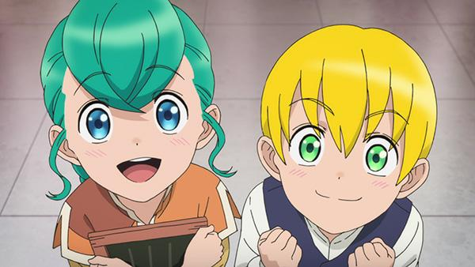

Reseña | Honzuki no Gekokujou 3 – Capítulo 3

Capítulo 3: Ceremonia de ofrenda y primavera
Damuel entra al servicio de la aprendiz Myne, encajando muy bien por el mal trato que le daban los nobles de rango superior, sintiéndose más cómodo con Myne y compañía. Por otro lado, Myne acompaña al Sumo Sacerdote a hacer las debidas ofrendas, donde solo ella puede acompañarlo por la cantidad de mana requerida, pero llega el Patriarca con un “encargo” del Señor Feudal del cual sospecha el Sumo Sacerdote. También se concretiza el trabajo al artesano, entregándole las piezas y al verlas y analizarlas Myne se desmaya de la emoción. Luego de la emoción el Sumo Sacerdote conversa con ella, Wolf murió, luego habla con sus padres y aceptan que Myne sea adoptada por un noble. Ahora ella deberá estar en la ceremonia de primavera con un invitado inesperado.
Opinión del capítulo
Me resulto un capítulo interesante, sobre todo la primera mitad, lo segundo fue algo esperado. Aunque sea interesante no creo que haya mucho que comentar ahí. Igualmente hay cosas resaltantes que no tienen respuesta inmediata, como la muerte de Wolf, porque los enemigos de él también lo serán de Myne. Ese acontecimiento termina condicionando a otros, por lo que la protección de Damuel ya no es garantía de seguridad y obliga a Myne a quedarse en la Catedral. Pero por cierto, Myne cada vez está más de su revolución social por medio de la literatura, pronunciando a ese Gutenberg que fue el revolucionario de su mundo. Muy gracioso el desmayo y la reacción de Damuel.
Los sirvientes
La llegada de Damuel podía alterar el orden establecido entre los sirvientes de Myne, pero no, es muy bien recibido y las personas se asombran de él, incluso llega a sentirse raro en el buen sentido porque solo estaba acostumbrado al maltrato (qué triste). Si bien no estará tanto con ellos, igual habrá buena química entre todos. Pero la que no parece cambiar…
Delia, sinceramente de todos los personas me parece que es la que peor la ha pasado (solo de lo mostrado y de lo que podemos suponer). Su apego al Patriarca me parece totalmente horrendo, pero no la culpo a ella, después de todo es una niña que fue condicionada a servir y actuar de ese modo para beneficiarse y no salir perjudicada. Al que detesto es al Patriarca (¿contra el patriarcado…?) por poner a la niña en una situación así. La información le será útil al Patriarca, aunque quizá ya lo sabía.
Solo Myne
Hay cosas que solo la ratona puede hacer y Damuel se da cuenta de eso. Pero eso que solo ella puede hacer también le es perjudicial, como ese supuesto favor del Señor Feudal transmitido por el Patriarca. Al igual que el Sumo Sacerdote, tampoco creo que sea de él, demasiado sospechoso, esa sonrisa falsa luego del sincero desprecio. ¿Posible sospechoso del asesinato de Wolf?
Solo Myne tiene tal cantidad de mana acumulada en su pequeña persona, que está resistiendo gracias a todo el apoyo del Sumo Sacerdote. Solo Myne a podido hacer todo eso porque no es de ese mundo (recordemos que es un isekai).
Conversaciones
Justo esa conversación privada entre el Sumo Sacerdote y Myne, ella corre peligro y el asesinato de Wolf atestigua la inseguridad de su persona. Esto también se debe a la descomunal cantidad de mana que tiene la ratona, que puede volverse un peligro si no se usa adecuadamente. Por tal motivo los padres logran entender, es un sacrificio que solo es así porque es Myne. Pensaba que el padre haría algo, pero tal parece que no lo hará, luego de esa charla da su brazo a torcer entendiendo que es mejor una hija a la distancia viva, que una niña cercana y muerta. Difícil de aceptar, sin embargo es la mejor elección.
Al final hay una introducción de un nuevo personaje, que no parece ser del agrado del Sumo Sacerdote. Parece que traerá problemas, aunque quizá sea un aliado de la ratona, quiero creer eso (dicho sea de paso, ese personaje me recordó al peleador de la segunda temporada de One Punch Man).